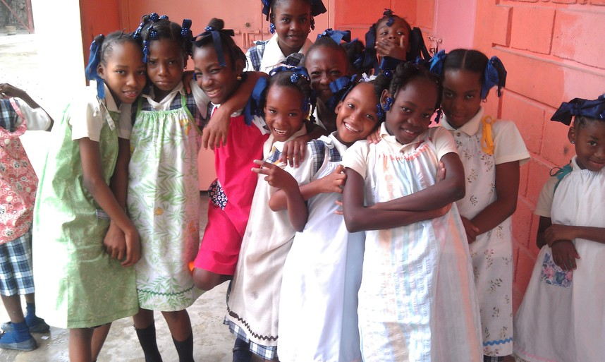

Haitian Relief Services
Haitian Relief Services (HRS) is a small non-profit, registered in Minnesota as a 501(c)(3), and located in River Falls, Wisconsin. Its staff consists entirely of two volunteers, Capt. Pat O’Malley and Dr. Curt Larson. Capt. O’Malley is a retired American Airlines Pilot, who established HRS in 1997 and serves as its president. His relationship with American Airlines provides very inexpensive travel to and from Haiti. Dr. Larson is a Physics Professor Emeritus at the University of Wisconsin River Falls and serves as the financial officer of HRS. Since HRS has no salaried staff, all donations received go directly into programs in Haiti, making HRS rather unique among nonprofits.
Mission Statement
The mission of HRS centers on improving the quality of life for the Haitian people, beginning with the people in Ganthier, Haiti. Capt. O’Malley, through piloting American Airline flights into Haiti, and Dr. Larson, on a Food For the Poor mission trip to Haiti, both observed firsthand the conditions of extreme poverty endured by the Haitian people. Both, in their retirement, have worked as volunteers to do what they can toward accomplishing this mission. While the task is a daunting one, they are motivated by the spirit of mission expressed the “Starfish Story”:
As a young child walked along a beach at dawn, he noticed an old man ahead of him picking up starfish and tossing them into the sea. Catching up with the man, the child asked why he was doing this. The old man explained that the stranded starfish would die if left in the morning sun. "But the beach goes on for miles and there are thousands of starfish," exclaimed the child. "How can you alone make any difference?" The old man looked at the starfish in his hand and then tossed it safely into the waves. He turned to the child, smiled, and said, "I made a difference to that one."
This story sums up pretty well the attitude needed when confronting the seemingly hopeless and endless need among the poor. Our approach is to provide a link between people of material means in and around River Falls, Wisconsin, and people of great need in Haiti. This link, in the form of a donation path, serves as a blessing to those willing to share of their wealth and those in Haiti who materially benefit as recipients.Projects
Ezekiel Village
In 2002, Ezekiel Lutheran Church, working in cooperation with six additional River Falls, Wisconsin churches and the nonprofit, Food For the Poor, led a project to fund twenty five houses and the associated bathrooms in Ganthier, Haiti. The project was funded by donations and the houses were completed and dedicated as “Ezekiel Village” in 2004. Donations were collected locally and funds were transferred using the nonprofit status of Food For the Poor. All construction design, engineering and labor for Ezekiel Village was provided by local Haitian people. The well-constructed buildings were undamaged in the 2010 earthquake and the 2016 Hurricane Matthew.
Ganthier School
In 2006 the River Falls churches, again led by Ezekiel, began a project to build a 650 student elementary school - high school in Ganthier. The first floor was built processing all donations and fund transfers through the nonprofit Food For the Poor, and was completed and in 2008. The second floor was completed and the school was dedicated in 2010. All donations and fund transfers for the second floor were processed through the nonprofit status of HRS. All construction design, engineering and labor for the school was provided by local Haitian people. The well-constructed building was undamaged in the 2010 earthquake and the 2016 Hurricane Matthew.

Ezekiel Village Water Cistern
A 12,000 gallon water cistern was constructed, in cooperation with the United Nations, for the people of Ezekiel Village in 2010. Drought conditions in Ganthier have made the availability of water problematic, but a project is underway to connect this cistern to a more reliable source of water.
Pillowcase Dress Project
On our September, 2015 trip to Haiti, we brought along 300 lbs. of clothing to distribute at two schools, one in Ganthier and the other in Gressier. The clothing was sewn in the Pillowcase Dress and T-shirt Shorts project, led by women of Ezekiel Lutheran Church, with contributions from our community and four addition communities. In 2016 this project produced 400 lbs. of clothing that was distributed in December to the same two schools. This project is a good example of how our community has supported the work of HRS in Haiti. Fr. Emmanuel Sainteliat is the priest in the Gressier parish. He was the parish priest in Ganthier when we built the school there, so we know him well. The 2010 earthquake devastated the Gressier parish and he was moved to that parish to lead its rebuilding. While our first commitment is to Ganthier, we try to help the Gressier school when we have sufficient funds to do so.
Hurricane Matthew Relief
The October 2016 Hurricane Matthew devastated the Gressier, Haiti parish. Because of our relationship with Fr. Emmanuel Sainteliat, we responded to the hurricane by raising and sending $15,350 to Gressier. These funds were used to purchase emergency food and home repair construction materials.
Galette Chambon Orphanage
The need for orphanages in Haiti was increased by the devastating earthquake of 2010. In 2018 Haitian Relief Services, with funding from the Servite Sisters (Servants of Mary of Ladysmith, Wisconsin), Ezekiel Lutheran Church and the River Falls community, funded the construction and furnishing of an orphanage in Galette Chambon, Haiti. The orphanage was completed in 2019. The facility has beds for 14 boys and 14 girls. The children attend the local school and receive an education.

Clean Oil Farming
At this time, HRS energy is focused on fund raising in two areas, (1) financial support of the school constructed in Ganthier, Haiti and (2) the development of an economic base in the Ganthier area. A proposal for a clean-oil farming plan, “A GROWING Project to Develop the Economy of Ganthier, Haiti”, has been developed and is described in the “GROWING Proposal”. This farming plan, when funded, will have a very favorable, sustainable and long term impact on the economy in Haiti. The project will begin in the Ganthier area, but in the long term will produce resources that will enable its continued expansion outward from Ganthier. We envision this project to be developed in a farming cooperative model so that ownership resides with the local Haitian farmers. Donors of means, who are looking to “help the less fortunate” rather than “invest for personal gain” are invited to donate to get this project going.
Contact
Want to get in touch? Use the form below to send us a message.
Donate
Donations are accepted through GoFundMe!